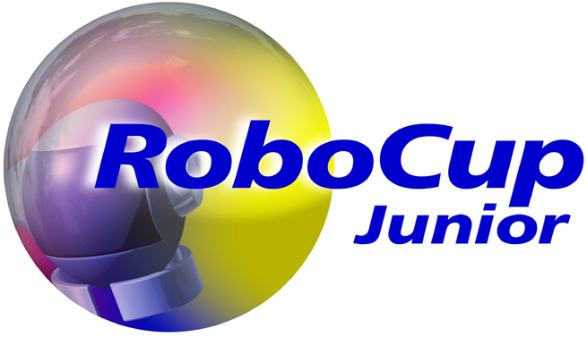

Présentation du Projet
La RoboCup est une compétition internationale de robotique visant à promouvoir la recherche en intelligence artificielle et en robotique intelligente. Mon implication s'articule autour de deux ligues principales : la Small Size League (SSL) et la ligue RoboCup Junior RSK/SCT.
Ligue SSL (Small Size League)
La ligue SSL se concentre sur le jeu d'équipe de robots miniatures hautement dynamiques dans un environnement contrôlé par une vision globale. Les défis majeurs incluent le contrôle de moteurs omnidirectionnels, la prédiction des trajectoires, et la communication à faible latence.
- ✔️ Mécanique : Base holonome (4 roues omnidirectionnelles).
- ✔️ Électronique : Conception de la carte de contrôle principale.
- ✔️ Informatique : Contrôle moteur et système de frappe.

Ligue Junior RSK / SCT
La ligue Junior est idéale pour introduire des concepts avancés d'intelligence artificielle via l'environnement de simulation RSK. Ce projet implique l'écriture de stratégies d'équipe et d'algorithmes de prise de décision testés dans un environnement virtuel robuste.
- ✔️ Simulation : Environnement RSK/SCT.
- ✔️ Stratégie : Développement d'IA pour le positionnement sur le terrain.
- ✔️ Test : Évaluation des performances avant déploiement matériel.
